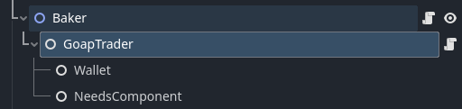
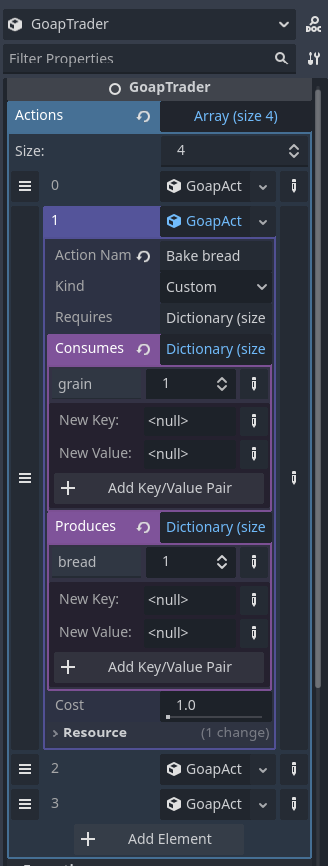
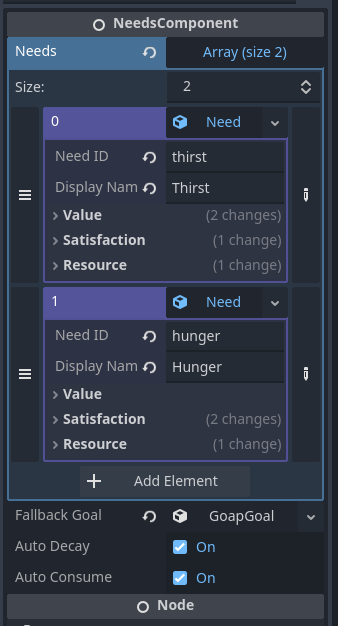
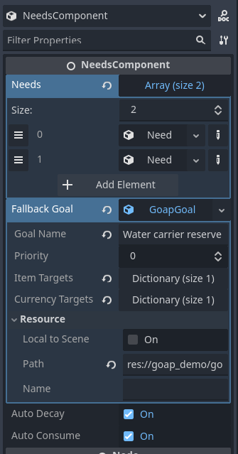
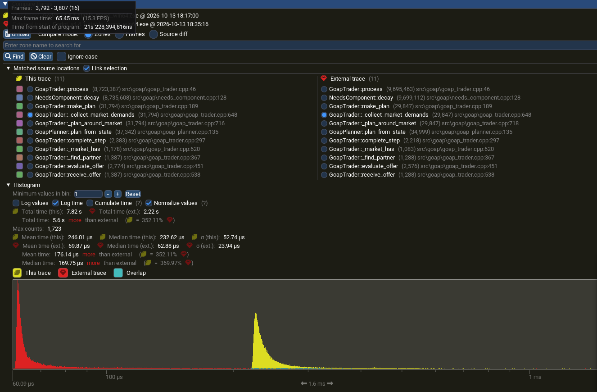

The idea
Most game economies are written in advance. The baker sells bread because a designer put bread in the baker's shop, and the caravan travels from A to B because someone drew that route. It works, but nothing in it reacts. If the baker runs out of grain, the shop is just empty.
I wanted an economy that works on its own: NPCs and players interacting with each other, where every trade happens because someone needed it, not because a route or a hand-written decision tree said so. Give each NPC needs, a wallet and a list of things it knows how to do, and let the trading come out of that.
The result is a GDExtension for Godot 4.4, written in C++. NPCs get thirsty and hungry, plan how to fix that, and buy, sell and produce along the way. Everything a designer works with (currencies, items, needs, actions and goals) is a Resource authored in the inspector, so building an economy needs no C++ at all.
How it fits together
The extension is split into two layers: the economy itself, and the NPCs that act in it.
The economy
An EconomyManager is the registry of everything that exists. Currency and EconomyItem are Resources, and everything is addressed by a string id. Definitions are kept apart from state, so content registered later, even while the game runs, works without any changes.
State lives in a Wallet node, which only holds balances and moves them around. Every transfer is guarded: it is refused if the sender doesn't have enough or if the receiver would go over the item's max stack, and a half-finished transfer is rolled back so nothing is ever lost or duplicated.
if (!remove_item(id, amount)) {
return false;
}
if (!other->add_item(id, amount)) {
// The receiver refused, give the item back so nothing is lost.
add_item(id, amount);
return false;
}Each change emits balance_changed, and a wallet finds the manager through a group, so there is nothing to wire up. Because a wallet is just a node, the player can have one too, which matters later.
The NPCs
On top of the economy sit the nodes that make decisions:
| Node / Resource | Role |
|---|---|
GoapTrader | The NPC. Plans, carries out steps and answers offers. |
Wallet | What the NPC owns, and the state its planner starts from. |
NeedsComponent + Need | What the NPC wants. Needs decay over time and become goals. |
GoapGoal | A target state, such as "hold 1 water". |
GoapAction | Something the NPC can do: trade, or produce with its own work. |
GoapPlanner | Finds the cheapest sequence of actions that reaches a goal. |
GoapPlan | The result: the steps, their cost, or why no plan exists. |
The minimum setup is one GoapTrader per NPC. It creates its Wallet, NeedsComponent and GoapPlanner if they are missing.

The extension decides, the game carries it out
The extension never moves an NPC or plays an animation. It decides what happens; the game decides how it looks. When a step starts, the trader emits step_started with the action and, for trades, the partner. The game does whatever it wants (walk over, play an animation, wait) and then reports back:
func _ready() -> void:
$GoapTrader.get_wallet().add_currency("gold", 10.0)
$GoapTrader.step_started.connect(_on_step_started)
func _on_step_started(action: GoapAction, partner: GoapTrader) -> void:
# Walk, animate, wait... then report back:
$GoapTrader.complete_step()Only on complete_step() does the extension apply the effects to the wallets and plan the next step. If something goes wrong (the partner walked away, it took too long) the game calls fail_step(reason). The trader then avoids that action for a while and plans around it. For NPCs nobody is looking at, instant_steps completes every step the moment it starts, without any game code at all.
Why GOAP
For the decision-making I used Goal-Oriented Action Planning (GOAP), the technique Jeff Orkin made famous with the AI of F.E.A.R. The main alternative was a Hierarchical Task Network (HTN). The deciding factor was that this extension can't know the content it will run with.
An HTN's hierarchy has to encode which item satisfies which need and how to get it. But here the items are defined by whoever uses the extension, after it has been compiled. A GOAP action, on the other hand, only says what it needs and what it changes, written in item ids and amounts. It never refers to the goal it serves, so it stays correct for any content added later. That is exactly the property an economy without pre-written logic needs.
The mapping onto an economy is direct:
- World state is the contents of the NPC's wallet.
- Actions are trades or production.
- Goals come from needs, ordered by how urgent the need is.
Every action is described by three amount lists. Here is how the extension documents it:
// requires: id -> amount that must be held, but is not used up (a tool, a licence)
// consumes: id -> amount that must be held and is removed
// produces: id -> amount that is added
//
// Farm grain (custom): produces {grain: 2}
// Bake bread (custom): consumes {grain: 2}, produces {bread: 1}
// Chop wood (custom): requires {axe: 1}, produces {wood: 1}
// Buy water (trade): consumes {gold: 2}, produces {water: 1}A trade action needs a partner who gives what it produces and receives what it consumes. A custom action is carried out by the NPC itself. That one shape covers farming, baking, drawing water and buying, without any of them being special-cased in code.


The planner is an A* forward search over wallet states:
- The state is stored as integers counted in thousandths, so decimal amounts stay exact and states hash consistently.
- The heuristic is admissible, so the planner returns the cheapest plan.
- The search always ends, limited by
max_depthandmax_explored_states, and a failed plan says why it failed.
When data isn't enough, a script extending GoapAction can define _is_available(trader) or _get_cost(trader), for example to make an action more expensive when the NPC is far away. I chose script overrides over a Callable property because a Callable can't be set in the inspector, which would have broken the whole "no code needed" idea.
Deciding whether to accept a trade
Planning answers "what should I do next?". But traders also get offers, from other NPCs and from the player, and "should I accept this?" is a different question. The answer can't come from a separate set of trade rules either: rules don't know the plan, so an NPC could happily sell exactly what its next step needs.
So the trader asks its planner. It plans its current goal twice, once as things are and once on a copy of its state with the offer applied, and compares the two costs:
// What the plan would cost after the offer: plan on a copy of the state with the offer applied.
Dictionary state = planner->build_world_state(wallet);
// ... subtract what this trader gives, add what it receives ...
plan_after = planner->plan_from_state(goal, state, actions, this, penalties);
if (cost_after < cost_now - COST_EPSILON) {
// Accept: the plan gets cheaper, or the goal becomes reachable.
}
if (cost_after > cost_now + COST_EPSILON) {
if (cost_after >= UNREACHABLE) {
// Something this trader cannot replace is never sold, whatever the price.
}
// The plan still works but needs more work. Accept if the payment covers that work.
const float work_price = (cost_after - cost_now) * work_value;
}
// The plan does not change: decide by value, so surplus is sold for a fair price.That gives four outcomes:
- The plan gets cheaper: accept.
- The plan gets more expensive but still works: accept if the payment covers the extra work, priced by
work_value. - The goal becomes unreachable: refuse, whatever the price.
- The plan doesn't change: decide by value, so surplus is sold at a fair price.
Every answer comes with a readable reason, such as the plan getting cheaper with both costs listed, which the demo shows above the NPC's head. A bonus of planning this way: when an offer is accepted, the plan computed while evaluating it already starts from the new state, so the trader can move on without searching again.
An NPC with no urgent need still needs something to judge offers against. Otherwise trade only happens when both sides happen to want exactly what the other has (the "double coincidence of wants" that Jevons described as the problem money solves), and the economy stalls. So traders can have a fallback goal, for example "keep 2 water and 10 gold", which is always planned last.

Trading as a player
Because offers are judged against the NPC's own plan, the player doesn't need a special shop interface. receive_offer works with any wallet, so the player trades with an NPC exactly the way NPCs trade with each other:
# Offer 3 gold for 1 bread. they_give is what the NPC receives.
var result := baker.receive_offer(player_wallet, {"gold": 3}, {"bread": 1})
if result.accepted:
print("Deal: ", result.reason)
else:
print("Refused: ", result.reason)The NPC accepts or refuses for the same reasons it would with anyone else, and it can't be talked into selling something it can't replace.
Coordination without a central planner
Each NPC plans alone and only sees its own wallet. That keeps planning cheap, but on its own it deadlocks. A hungry farmer plans to buy bread, but the baker has none. The baker waits for grain, but the farmer is busy trying to buy bread. Neither knows the other is waiting.
One fix is to plan for everyone at once. That finds the best overall plan, but the search grows with every NPC added, and a shared plan goes stale as soon as one NPC changes course. Instead, the extension uses demand signals, close to the Contract Net Protocol: NPCs keep planning alone, but announce what they're missing.
Before a plan is used, its first step is checked against the market. If it's a trade nobody can serve right now, the trader posts a demand and plans again without that action, so it does something useful in the meantime:
Ref<GoapAction> first = plan->get_steps()[0];
if (first->get_kind() != GoapAction::KIND_TRADE || _market_has(first->get_produces())) {
return plan;
}
_post_demands_for(first->get_produces());
waiting_for.push_back(economy_amounts::to_text(first->get_produces()));
usable.erase(first);Traders that can produce a demanded item with their own work get a "Demand" goal for it, slotted in among their need goals by demand_priority. Demands expire after demand_duration, so stale ones don't linger. The chain sorts itself out: a demand for bread leads to a demand for grain, the farmer farms, the baker bakes, and the farmer buys his bread.
A few settings keep the economy itself healthy. Fallback goals must not ask for more gold than exists, or nobody trades. Producers need a work_value above zero, or they stop selling the moment their surplus is gone. And prices have to let every role break even; in the demo, bread is worth 2.4× water and grain 1.2× water.
Adding content without code
To test the "no C++ needed" claim, the goap_firewood scene adds a whole new production chain using only the inspector: a Warmth need, a firewood item, three actions and a Woodcutter NPC. Nothing else changes, and the Woodcutter starts selling firewood to the Baker on its own.
Performance: 9 to 900 NPCs
The extension is instrumented for the Tracy profiler (v0.13.0). Building with scons tracy=yes adds the profiler; without it, the markers compile to nothing. The stress scene runs 9 to 900 traders, in one shared market or in markets of 30, with instant_steps on so only the extension is measured.
Planning is cheap: a plan search takes about 10 µs and judging an offer about 33 µs. The real costs were elsewhere: NeedsComponent::decay, which runs for every NPC every frame, and _collect_market_demands, which made up 86% of make_plan and is O(N²) within one market.
The fix for the demand scan was simple. Most traders have no demands most of the time, so they're skipped before any work is done:
// Most traders have no demands most of the time. Checking that first skips building
// a Dictionary for them, which made this scan the most expensive part of make_plan.
if (!other || other == this || other->posted_demands.is_empty()) {
continue;
}That cut each call by 72%. Together with caching signal names as StringNames and only looking up the wallet once a need crosses its threshold, the results at 900 NPCs are:
| Metric | Before | After |
|---|---|---|
| Extension cost per frame, 900 NPCs | 3.1 ms | 1.4 ms (−54%) |
| Cost growth from 300 → 900 NPCs | 5.5× | 4.1× |

The economy stayed healthy at every size: at most 2% of needs were ever urgent, and no need ever reached 0. The spikes in the profile come from the stress setup, not the extension: every trader starts with identical needs, so they all plan in the same frame.
Limitations and next steps
Current limitations:
- Only the first step of a plan is checked against the market; later steps depend on what the market looks like by then.
- Demand covers goods nobody has, not goods an NPC can't afford. Credit or barter would close that gap.
- An NPC with money and no needs will buy anything offered at a fair price. A per-item limit would fix that.
What I'd build next:
- Lazy decay: store a value and a timestamp and schedule threshold crossings, instead of ticking every need every frame.
- Market indexes, to remove the O(N²) demand scan.
- Level of detail for NPCs far from the player.
- Dynamic pricing driven by demand.
Try it
The code is on GitHub. Open test_project in Godot 4.4 for the walking demo, the automated checks and the stress test. The wiki explains how to set up your own traders, items and needs.
References
- J. Orkin, "Three States and a Plan: The A.I. of F.E.A.R.", GDC 2006. pdf
- T. Humphreys, "Exploring HTN Planners through Example", Game AI Pro. pdf
- A. Patel, "Introduction to the A* Algorithm", Red Blob Games. link
- A. Torreño, E. Onaindia, A. Komenda, M. Štolba, "Cooperative Multi-Agent Planning: A Survey", ACM Computing Surveys 50(6), 2017. doi
- R. G. Smith, "The Contract Net Protocol", IEEE Transactions on Computers C-29(12), 1980. doi
- W. S. Jevons, Money and the Mechanism of Exchange, 1875.
- Tracy Profiler. github